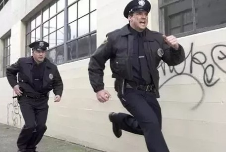

Edward slowly looks up to see two large figures looming over him. They both look down and immediately notice the can still in Edward's hand.
A small smirk spreads across Edward's face for amoment before he take off in a full dash. The two Colo cops immediately follow suit

Dashing through alleys and around corers, the chase went on and on. Edward finally dashed down one final alley with a row of trash cans. He
mangaged to wuickly duck into one just before the cops ran around the corner. They stopped to look around until they finally ran off to find the man
they were following. Edward poked his head out from under the lid of the trash can and slowly popped out of it. Thankfully the place he ended up at
was only a short walk to his apparment. Quickly and carefully, Edward made his way over to his appartment where he would be safe. After a few close
calls almost stumbling into those same cops, he eventually made his way back. Finally, he was safe in his old beat up appartment.
Now in the comfort of his own place, Edward sits down and cracks open his new aquired Mug root beer as a wave of reief and confort wash over him.